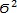

Основні статистичні характеристики вибірки
У математичній статистиці вивчають числові характеристики вибірок, які узагальнюють об'єкти вибірки за певною ознакою. Наприклад, якщо вибірка складається зі 100 учнів, узагальнюючою характеристикою може бути середня успішність учня або, скажімо, максимальний зріст.
Зазначимо, що у разі обчислення статистичних характеристик вибіркою найчастіше називають набір значень певного параметра вибраних об'єктів, наприклад набір річних оцінок учнів з математики. Кожен елемент вибірки в цьому випадку називають варіантою.
До основних числових характеристик належать середнє значення, медіана, мода (показники центру вибірки), а також стандартне відхилення, асиметрія, варіаційний розмах вибірки (показники варіації). Показники центру дозволяють знайти значення, яке у певному розумінні є найбільш типовим, «центральним» для всієї вибірки, а показники варіації дають змогу оцінити, наскільки вибірка згуртована навколо центрального значення, наскільки вона є широкою, симетричною тощо, інакше кажучи, як елементи вибірки розсіюються, або варіюються. Дамо означення згаданих статистичних показників вибірки.
Показники центру
Найпростішим показником, який характеризує центр вибірки, є мода – елемент вибірки, що зустрічається найчастіше. Якщо таких елементів кілька, вибірка має кілька мод.
Середнє значення вибірки – це середнє арифметичне усіх варіант вибірки:
де n – об'єм вибірки (тобто кількість варіант у ній); x1, ..., xn - всі варіанти вибірки.
Медіана вибірки – це число, що є серединою вибірки: половина варіант мають значення, більші за значення медіани, а половина – менші.
Показники варіації
Основними показниками розсіювання варіант є варіаційний розмах, стандартне відхилення, асиметрія.
Варіаційних розмах (інтервал, амплітуда) – це різниця між максимальним та мінімальним значеннями елементів вибірки.
Стандартне відхилення – це параметр, який характеризує ступінь розкиду елементів вибірки відносно середнього значення:
де n – об'єм вибірки, x1, ..., xn – варіанти, х – середнє значення вибірки.
Величина  називається дисперсією вибірки.
Асиметрія – величина, яка характеризує ступінь несиметричності розподілу відносно його середнього значення. Додатна асиметрія вказує на відхилення розподілу в бік додатних значень. Від'ємна асиметрія вказує на відхилення розподілу в бік від'ємних значень. Якщо розподіл варіант симетричний, то асиметрія дорівнює0. Формулу коефіцієнта асиметрії не наводимо, оскільки вона є достатньо складною.
Коли для вибірки обчислено узагальнюючі показники, постає питання: як вони пов'язані з відповідними показниками генеральної сукупності? Найпростіше припустити, що генеральна сукупність має приблизно ті самі значення цих показників, які має вибірка. Визначити їх – означає знайти точкові оцінки числових характеристик генеральної сукупності. Але коректніше казати, що та чи інша характеристика генеральної сукупності з певною ймовірністю належить певному інтервалу навколо значення, обчисленого за вибіркою. Визначити такий інтервал – означає знайти інтервальну оцінку статистичного показника. Однак вивчення методів пошуку інтервальних оцінок не входить у завдання цього посібника.
ПРИМІТКА. Точковою оцінкою стандартного відхилення генеральної сукупності є виправлене вибіркове стандартне відхилення, яке обчислюється за формулою:
Ця ж формула реалізована у відповідній функції Microsoft Excel.